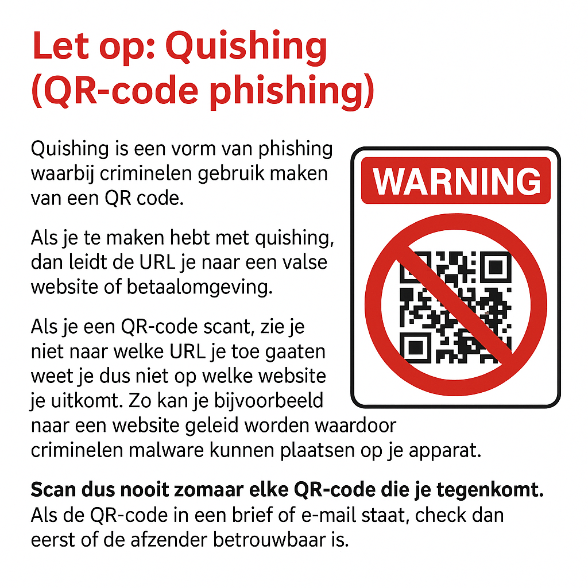

Quishing is een vorm van phishing waarbij criminelen gebruik maken van een QR code.
Als je te maken hebt met quishing, dan leidt de URL je naar een valse website of betaalomgeving.
Als je een QR-code scant, zie je niet naar welke URL je toe gaat en weet je dus niet op welke website je uitkomt. Zo kan je bijvoorbeeld naar een website geleid worden waardoor criminelen malware kunnen plaatsen op je apparaat.
Scan dus nooit zomaar elke QR-code die je tegenkomt. Als de QR-code in een brief of e-mail staat, check dan eerst of de afzender betrouwbaar is.
